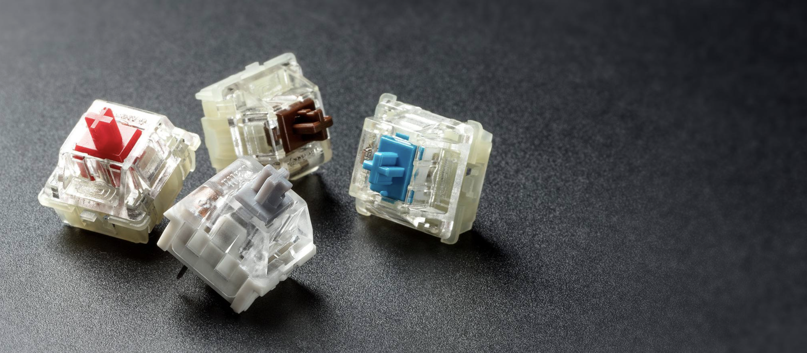

SWITCHES
Wat zijn het?
De switches zijn het mechanisme onder de keycaps. Ze registreren het als je op een knop drukt. Op sommige machenical keyboards is het mogelijk om deze te veranderen, helaas niet op altijd, omdat niet elk toestenboord daar voor gemaakt is. Hierdoor krijg je dus een ander geluid op je toetsenbord. Je hebt bijvoorbeeld blauwe die een die en heel erg *klik* geluid maken als je er op klikt of bruine switches die een heel erg diep geluid maken. Zo kan je dus zelf het helemaal personaliseren en het je eigen look geven
Waar kan je ze krijgen?
Jammer genoeg zijn switches en mechanical keyboards in het algemeen heel lastig te krijgen in Nederland, vooral als je ze zelf in elkaar wilt zetten. Je kan ze wel krijgen op bijvoorbeeld Amazon, drop.com of andere Amerikaanse websites.
Hoeveel kosten ze?
Switches zijn in het algemeen per stuk niet zo duur, het gaat alleen wel veel kosten, omdat de meeste sites ze in sets van 20 stuks verkopen waardoor je er 2 moet kopen.